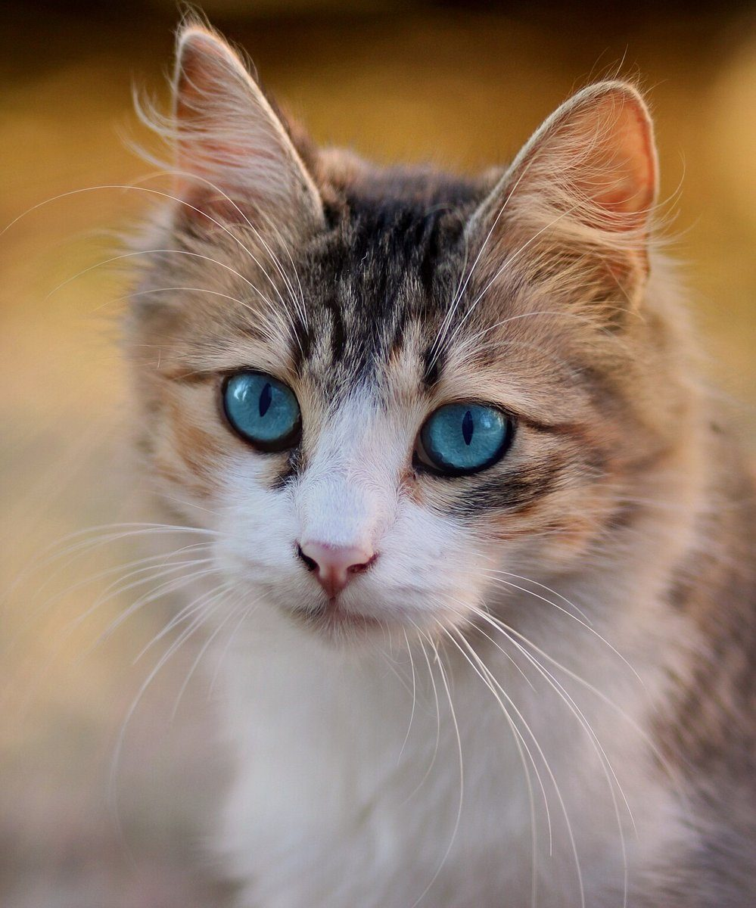
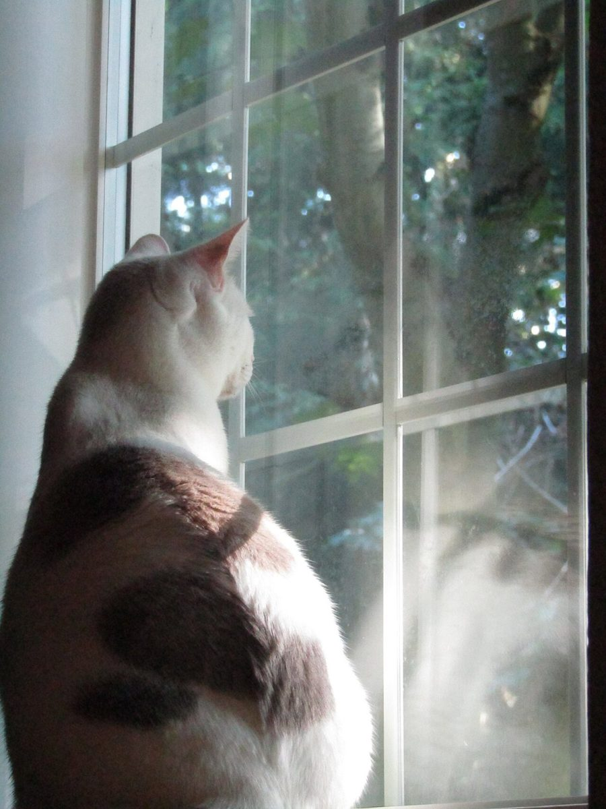
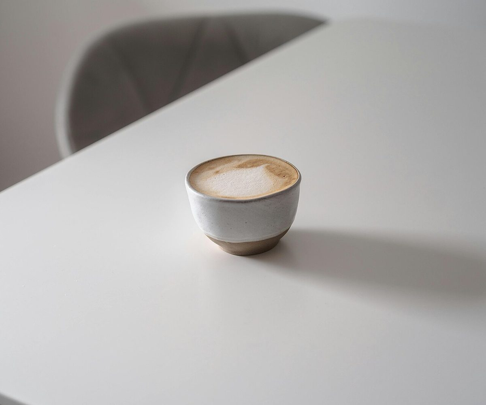
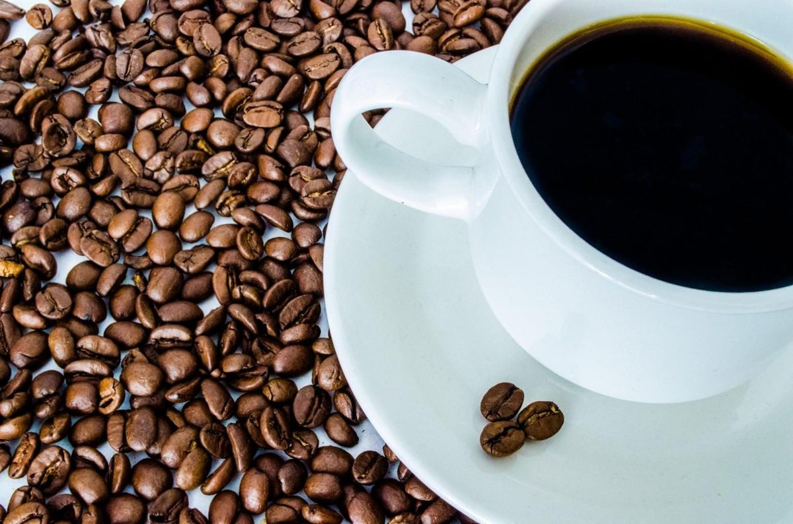
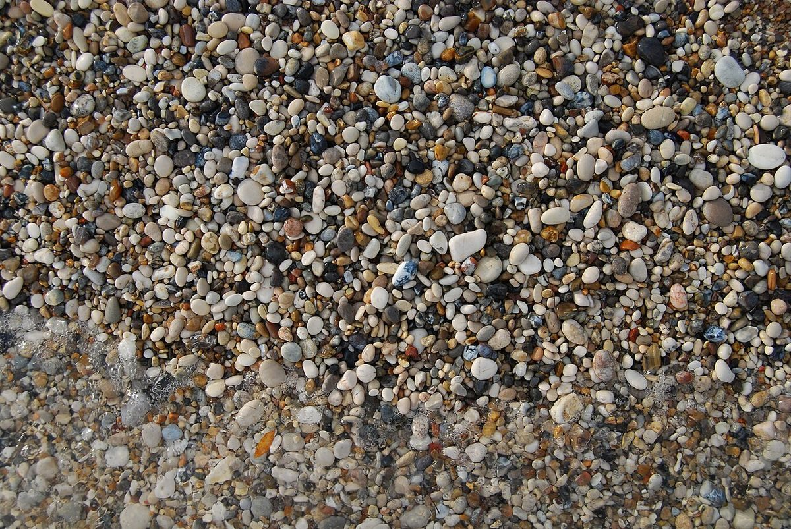
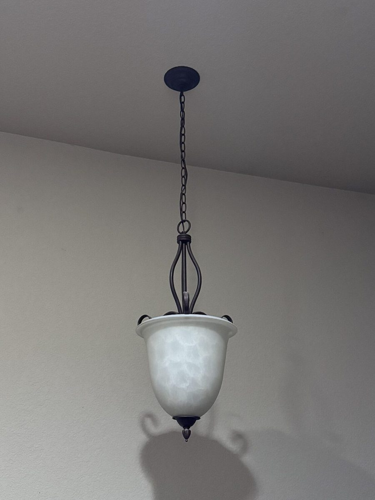

制作側の連想
Kで始まる六つの語
このページの構成は「制作側の連想で、お店の理念・由来とは無関係」です。店名の由来は分かりません。制作側は、店名のつづり「kissa」がフィンランド語で「猫」を意味することから、Kで始まるフィンランド語の単語を六つ選び、六枚の札のように並べてみました。単語の選び方も写真も、お店の考えや提供内容とは関係ありません。
K語の六枚札
kissaから、K語をひき出す
写真はこのお店の写真ではありません。単語から連想して選んだ、国外・撮影地不明のフリー素材です。
- 01
kissa
キッサ
猫
いちばん最初の語。お店の名前と同じつづりなので、制作側が最初に連想しました。
kissa=猫(イメージ) 
猫のうしろ姿(イメージ) - 02
kahvi
カフヴィ
コーヒー
カフェという業種から連想した語です。

kahvi=コーヒー(イメージ) 
豆のアップ(イメージ) - 03
kuppi
クッピ
カップ
飲み物を入れる器の語です。

kuppi=カップ(イメージ) 
カップと豆(イメージ) - 04
kynttilä
キュンティラ
ろうそく
ゆれる火のイメージから選びました。

kynttilä=ろうそく(イメージ) 
ろうそくの炎(イメージ) - 05
kivi
キヴィ
石
小石のざらりとした質感から選びました。

kivi=石(イメージ) 
吊り下げ灯(イメージ) - 06
kaakao
カーカオ
ココア・カカオ
茶色つながりで連想しました。

kaakao=カカオ(イメージ) 
カップを真上から(イメージ)
ご案内
お店のこと(確認できたものだけ)
| 所在地 | 〒729-4211 広島県三次市吉舎町吉舎３９７ |
|---|---|
| 電話 | 090-9063-0376 |
| 営業時間 | 準備中 |
| 定休日 | 準備中 |
| ご予約 | 準備中 |
| 駐車場 | 準備中 |
| SNS | Instagram @kissa_nanokaichi |